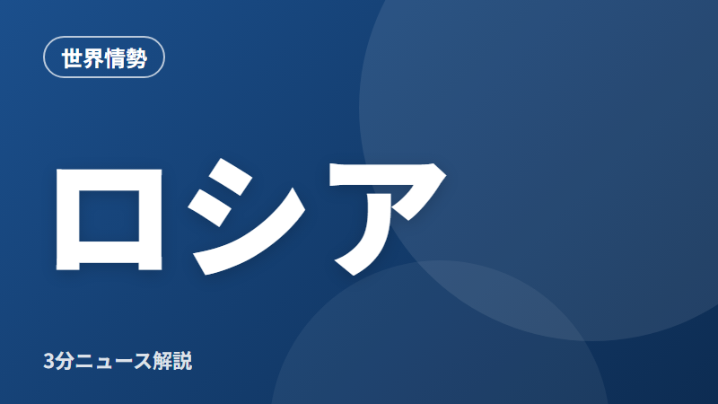
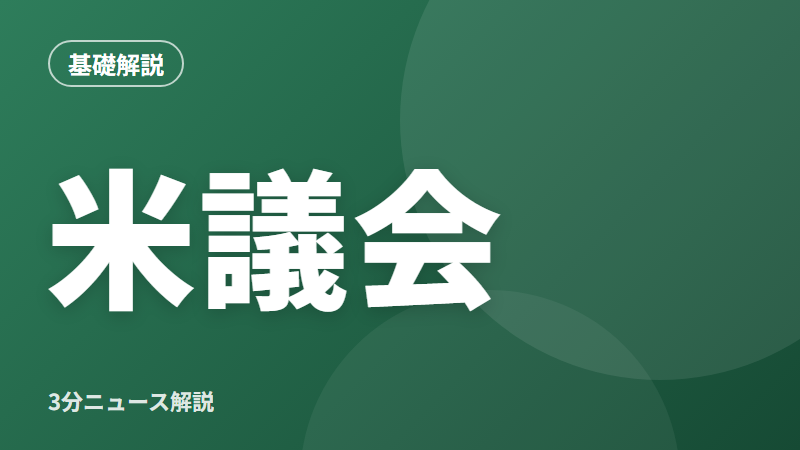

むずかしいニュースを、会社員目線で3分で。世界情勢・経済のニュースが「自分の生活にどう関係するか」まで解説します。
2026年11月4日 更新

今日の1本目世界情勢
米軍がイランの島を攻撃と報道。原油の値段と日本への影響は？
- 米軍が、ホルムズ海峡にあるイランのゲシュム島を攻撃したと米紙が報じた
- 米国側は「商船への攻撃を防ぐための限定的な措置」と説明している
- 原油の値段は、和平への期待と緊張の高まりの間で大きく揺れている
くらしへの影響原油が上がると、ガソリン代や電気代も上がりやすくなる


新着記事11月4日更新

くらし・お金
今年の年末調整は「178万円の壁」。12月に税金が戻ってくる人も？
くらしへの影響12月の年末調整で、税金が多めに戻ってくる人がいる

世界情勢
米中間選挙って何？日本の会社員に関係ある？
くらしへの影響結果しだいで、円相場や株価が動く可能性がある

経済
日銀「物価2%に到達」ってどういうこと？住宅ローンや預金はどうなる？
くらしへの影響変動金利の住宅ローンは返済が増えやすく、預金金利は上がりやすい

世界情勢
ロシアの製油所にドローン攻撃。ウクライナ和平の話し合いはどうなる？
くらしへの影響戦闘が長引けば、ガソリン代や電気代の高止まりが続く可能性

経済
オーストラリアが利上げ。海外の金利の動きは日本にも関係ある？
くらしへの影響海外との金利差が広がると、円安になりやすい
基礎から学ぶニュースがもっと分かるすべて見る ›

基礎解説
円安・円高ってどういうこと？10秒で分かる考え方と生活への影響
円安＝円の価値が下がること。1ドルを買うのに、より多くの円が必要になる

基礎解説
金利が上がると何が起きる？住宅ローン・預金・給料への影響
金利は「お金を借りるときのレンタル料」のようなもの

基礎解説
インフレと「実質賃金」とは？給料が上がっても生活が楽にならない理由
インフレ＝モノやサービスの値段が、全体として上がり続けること

基礎解説
日銀ってどんなところ？3つの役割と、ニュースの「金融政策決定会合」
日銀は日本の中央銀行。お札を発行し、物価の安定を目指している

基礎解説
原油の値段が上がると、なぜ電気代や食品まで高くなるの？
原油は、ガソリンだけでなく発電やプラスチック、物流にも使われる

基礎解説
ホルムズ海峡ってどこ？なぜ日本のガソリン代に関係するの？
ホルムズ海峡は、中東のペルシャ湾の出口にある細い海の通り道

基礎解説
アメリカの上院・下院って何がちがうの？中間選挙が大事な理由
アメリカの議会は、上院（100人）と下院（435人）の2つでできている

基礎解説
年末調整ってなに？会社員が知っておきたい仕組みと書類のポイント
年末調整は、1年間に給料から天引きされた所得税を、会社が正しく計算し直す手続き